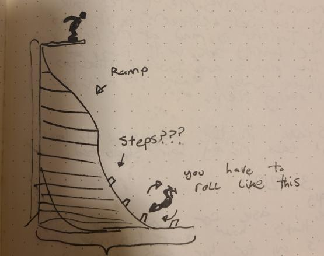
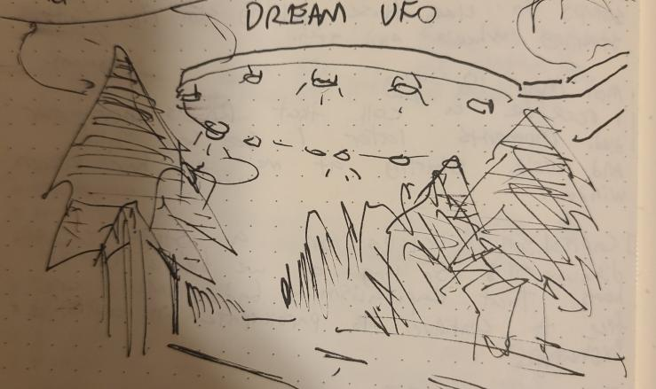

I started my dream journal in April of last year. It was a good idea, in retrospect.
Dreams are an important tool. They are, as famously documented by Freud, a door into the subconscious. Dreams are also relevant; even if you haven't recalled a single dream in the last 10 years or even in your entire life, it is likely you dream nearly every night[1]. Underlooked, to me, is the potential of dreams as a source of creative direction. Even during the U.S. lockdown (which, in my corner of paradise, has still been going on a year later), I have an ceaseless flow of themes and ideas to siphon off into my waking projects.
It is not easy to effectively dream, and like many skills dreaming is a muscle you must exercise. The very most important thing you can do to train this muscle is to write your dreams down[2] as soon as you wake up. There are other things you can do if you have the goal of lucid dreaming (that is, dreaming with awareness that you are in a dream), but I won't get into that, and I haven't been particularly successful with the technique anyway. Dreaming is a lot like meditation in my opinion, but, unlike meditation, you probably do it every night. I would not be surprised if there are similar benefits to dream journaling.
Following is a collection of some of my favorite and most memorable dreams, as well as some accompanying illustrations. Psychoanalyze me how you will. Nearly all of these I remember vividly, even if some are over a year old, simply because I wrote them down. Even my very first entry (which is the first listed here) is one I can visualize now with as high fidelity as any recent memory of waking life, if not higher.
I post these here partially for archival purposes, but also to give some insight into what inspires me and what is going on under the hood of my subconscious. I don't think my dreams are particularly unique from others'—or, maybe, the dreams of all people are so unique from one another that I don't consider mine to be particularly remarkable among others'—but I hope this might convince you why documenting your dreams might be a fun and fulfilling experience.
April 19, 2020
1: Due to a technicality in the voting process, Gary Coleman is now the president of the US. When asked "what he was talking about, Willis," he responded, "please, come up with a new joke."
This dream happened entirely inside Twitter. Thankfully, this is the first and last entry of that nature.
2: A monkey loses his sponsorship after a climbing injury in the jungle gym. I explain this to another monkey at the top of a humongous, very thin natural rock "ledge." The monkey falls off the ledge, then so do I. We fall into the expansive jungle. I distinctly remember the jungle being in Papua New Guinea. The monkey could talk, too. He fell before I did, and I could hear him asking for help as he fell onto a lower "platform."
There are no primates other than humans in Papua New Guinea (I checked). Also—and I don't know why I did not write this in my journal—I am confident in my memory that the monkey had the voice of Gilbert Gottfried. The monkeys looked like some kind of macaque or baboon.
April 25, 2020
Talking tiger turns out to be rapper dressed in rubber costume, in order to attract female party-goers. I have to uncover all the (covered) furniture as a minigame. Little suitcases that self-consciously shut themselves when you look at them are "points" I want to collect.
Rubber costumes are a theme that frequently show up in my dreams (as you might see). I don't know why.
April 30, 2020
At a gymnastics convention/competition. I enter an event which involves diving from very high in the air onto solid ground. I don't stick the landing, but I'm alright. I get a participation trophy. I think the convention was held at the Santa Monica pier.

May 3, 2020
I'm trapped in Hell, or something. I have to complete difficult tasks to not be tortured. The one I finally failed was to count all instances of the number 12 in some (insurance?) document. We were floating in a void, on some strange structure. My captor was not visible to me, but I could hear him taunt and belittle me. My first punishment, incidentally, was to be sat in one place with no new tasks, or anything to do for one week.
For many people, I think nightmares are a source of trauma. But I haven't had a dream that really disturbed me past waking up since I was young. I've mentioned this online, but I find that nightmares are a lot more tolerable than particularly good dreams; with the latter I usually just feel disappointed, whereas I always tend to wake up relieved that I get a "second chance."
May 7, 2020
I'm in a relationship with [REDACTED] from school, and we live in an apartment with a few others. I'm in bed with him. The apartment is trashed. His roommates mention he's kind of a creep. I didn't believe them until he says (which appears in a FFVII style text box),
"Rolllllllll, Rooooooollll retard *laughs*
roooooollllll retard...."
On this day I turned 23.
Underneath this entry in my journal is a (non-dream) bullet point which reads, "When you sleep, you go back in time."
May 17, 2020
I learn all about different kinds of boating games, from realistic to "arcade." In Cambodia, boat games will have a blue energy wall if you stray too far.
Some people have similar boating game setups to those driving sim rigs with steering wheels and such.
I have not found any information on Cambodian boat games nor how else they differ from the normal kind.
May 19, 2020
I am in a taxi cab. I vividly see a UFO.

May 25, 2020
I'm in British Columbia, but it's on the other side of the continent, and is named Monte Carlo. I want to explore, but I began work at [local call center] and cannot leave my hotel room. I leave anyway. Exploring the building, there's a lot of people especially in the lobby. French accent guy wants to know where he can get food. I keep seeing this beautiful pregnant woman with short, brown hair.
This one is fun because it highlights a bunch of stuff I'm completley unfamiliar with yet with blind confidence I fill in the blanks. I've never been to any part of Canada, and I don't even know where the name Monte Carlo came from. However, my subconscious at least does recognize that some parts of Canada are home to a French-speaking population, though I don't know about BC.
It's also narratively substantial, with multiple characters and predicaments. I want to know more about French accent guy and the pregnant woman. Maybe I'll meet them again.
May 26, 2020
We were going to play Spelunky 3D with the latest graphics mod, but [my friend] does not like the "Long Baby" model for the baby character. I do the Gangnam Style dance, but [my other friend] is not impressed. It's not until I start flossing and vibrating across the mall floor that he breaks into laughter.
I am putting this one in here entirely because of the "Long Baby". It looked like a normal baby except it was the size of a large dog and had a cone head.
{kind=link}
June 13, 2020
I visit a ranch. There is a sheep farm. I am eating dinner, outside, at a long table with the farmer on one side and I on the other. The sheep are held up by their necks so that they learn to stand upright. The sheep are eating alongside us, suspended by their nooses on the sides of the table. They're taught to say "CHEWING" and "SWALLOWING" when they eat food. I ask the farmer why they do this. A particularly intelligent, disembodied sheep's head on the table tells me it's because it makes the sheep taste better.
I think this one is my favorite.
June 23, 2020
As a homework assignment, I made a rubber suit of myself with help from friends. But when the due date comes, I forget to bring it.
Another rubber suit dream. If you listen to my music, you might find this one somewhat familiar.
July 10, 2020
This town is in disrepair. On my bike ride my companion and I are accosted. We walk into a family's house. They are very poor, and neglectful of their children. An infant shrieks and squirms in its mother's arms. Another woman walks by and bludgeons it to death with a small hammer or mallet. There are simply so many children in this house. A formless baby, melted inside a teacup giggling. A young boy with no eyes, curious, walking around and puffing a disgusting mist everywhere. There are sacs and boils of substances I can't name. Children who move like worms and bugs, cramped into the bathroom. The boy grabs my arm and doesn't let go.
One of the longer entries in my journal, this isn't so much a nightmare as it is disturbing in retrospect. It was certainly eerie and uncomfortable, but like most of my nightmares I did not feel particularly afraid or upset during it. Only after waking from this has the image of the woman killing the infant latched into my brain.
A long gap.
March 16, 2021
After a false awakening, [my partner] and I go on a walk to the nearby market. This time we use the sidewalk on the right of the street instead of our typical left, but I don't find that to be unusual. Whenever I look at her face, I can't remember if she forgot to put on her shirt correctly, uncovering her chest. But when I look at her chest to see, her shirt is on correctly. I chalk this confusion down to not being on my medication.
In fact, I began a break from my medication shortly before writing this. After this dream, I woke up, but not all the way. I heard the world go quiet, and the voice in my head announced, "SLEEP PARALYSIS NOW." Then I went into sleep paralysis. This remains one of the strangest sleep-related experiences that I have ever had.
March 21, 2021
A masked woman. Another woman cries as new people phase in and out of reality next to her. We live in some kind of mansion with different sections... I can't remember the significance. There's a large foyer with golden marble walls, floors, pillars. Looks like the bank from the Matrix, but gold. I know the weeping woman cries because the people near her are being taken and moved somewhere else. She further descends into hysteria as a 2-year-old is taken from its mother. I am peeling an egg when I look at the masked woman, and I say, "Red rose. Red rose. Red rose."
Shortly after, I have a terrifying instance of sleep paralysis. I am thinking about Laura Palmer, as if she were real. My hearing cuts into aggressive static. My vision flashes red and white. I feel like I am being punished.
April 18, 2021
1: About to go climbing with [a friend]. But first, an attractive person cuts up bedsheets to preserve my soul.
2: I am naked, a child. A police officer viciously interrogates me in a back alley. Nearby, I can see over the heads of pedestrians a red or green square indicating whether or not they are positive for COVID. The police officer is one of them. She infects me with the disease, since she is in such close proximity.
The first entry here is interesting because it is one of the few I can't remember a bit of despite having written it down. You might have noticed how the dates between dreams I've posted have become farther apart from one another. I haven't been diligent in recording my dreams as much as I was in the beginning. This I am hoping to change.
That's it for now.
There are more, but many of them are not very interesting, or they contain something I don't feel is appropriate to share (or perhaps violates the privacy of others). I've been thinking about adding a dreams section to this website so I can keep them updated and organized (ala Ulillillia's collection), but I figure a bloog will do for now. I also will keep updated with lucid dreaming, should I have any success with that.
[1] Herlin B, Leu-Semenescu S, Chaumereuil C, Arnulf I. Evidence that non-dreamers do dream: a REM sleep behaviour disorder model.
[2] I use one of these (with dotted ruling). If you don't feel like handwriting your dreams every morning, you could also use your phone, or a voice recorder, or anything else—the goal is simply to save the contents of your dream as quickly as possible.